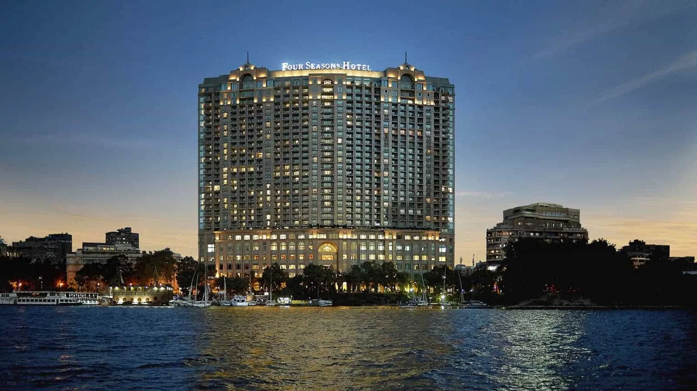
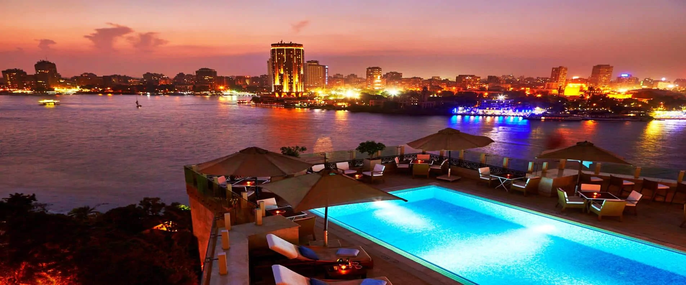
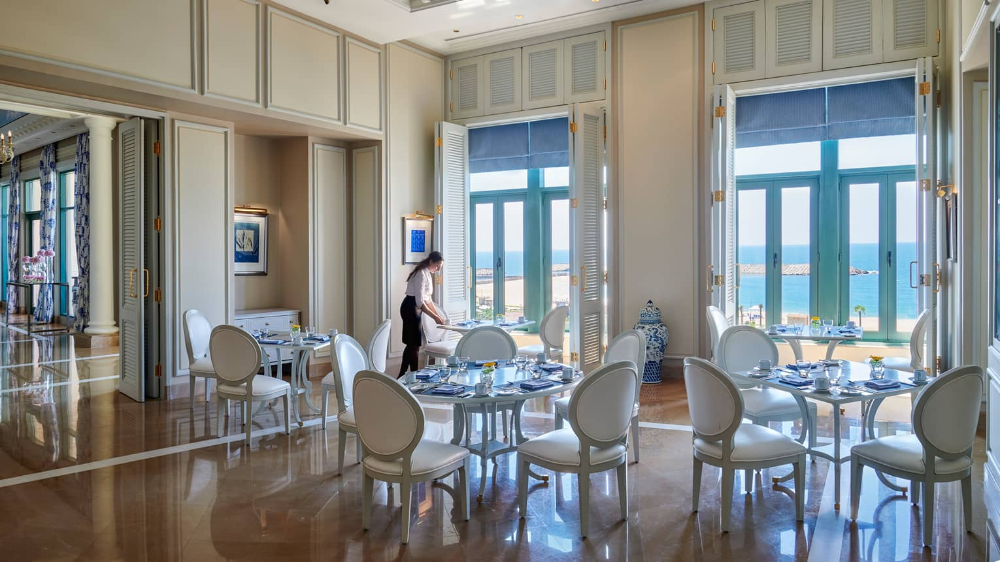

Best hotels in Egypt

Four Seasons Cairo at Nile Plaza, 1089 Corniche El Nil
Relish far-reaching views of the city, the Pyramids of Giza, and beyond when you book a room at this Four Seasons. Located in charming Garden City, this property promises the typical luxuries associated with five-star hotels including down pillows, a stocked minibar, and free Wi-Fi. Zitouni, the on-site restaurant serving authentic Egyptian fare including lentil soup, lamb fattah, and stuffed pigeon, is regarded as one of the very best in town..

Kempinski Nile Hotel
You’ll undoubtedly feel like royalty at this boutique property in the Garden City District, close to Cairo’s main attractions. The Lady in Red Ambassadors are there to enhance each guest’s experience, and the 24-hour butlers cater to individual requests. Be sure to try the four on-site restaurants and bars: The Blue for Italian classics and Osmanly for Ottoman cuisine, as well as the Chocolate Lounge and the Jazz Bar for cocktails and music. This hotel also offers a luxury spa, fitness center, and rooftop pool with lovely Nile River views.
Timings in Summers: 6 AM – 5 PM (till 4 PM in winters)

Four Seasons Alexandria
Besides comfy quarters, you’ll find amenities galore such as an on-site gift shop, ATM, car rental desk, florist, currency exchange, and a tour desk at this Hilton property. The hotel restaurant Sahar-Al-Laialy plates Middle Eastern classics, and Santorini serves Greek fare alongside views of the Mediterranean Sea. Cigar aficionados will appreciate The Cigar Bar for a smoke and a cocktail, ideal after a long day of touring Alexandria.

Sofitel Old Winter Palace, Corniche El Nile street-Luxor
Dating back to 1886, this Colonial-style palace is a member of Historic Hotels Worldwide. The opulent interiors highlight antique furnishings, grandiose staircases, and soaring ceilings. This Sofitel outpost sits along the Nile so expect to kick back with stunning views after a day of touring Luxor. Five restaurants and bars promise plenty of options for eating, drinking, and socializing.
Location: Abu Simbel, Nubia

Sofitel Legend Old Cataract-Aswan
Perched on the Nile River, this luxury hotel is close to Aswan’s top attractions. Immerse yourself in the tranquility of the Nubian Desert and be minutes from Khnum Temple, Elephantine Island, the Aswan Museum, St. Simeon Monastery, and the Kalabsha Temple. Meanwhile, lavish accommodations include dreamy SoBeds – the cozy sleep ensemble that the brand is known for – marble baths with Whirlpool tubs, and French amenities. Staying here will give you the opportunity to visit off the beaten track things to do in this part of Egypt.

Oberoi Sahl Hasheesh, Hurghada
Feel spoiled at this all-suite resort sprawled along 48 acres of the shores of the Egyptian Red Sea. Expect high-domed ceilings and tons of natural light in the spacious, well-appointed suites at the Oberoi Sahl Hasheesh. Dine in the courtyard of The Restaurant or opt for Indian cuisine by candlelight accompanied by live music at Zafraan. Meanwhile, The Pergola is the spot for a poolside meal, and The Bar pours cocktails paired with Middle Eastern snacks.

Rixos Sharm El Sheikh
This ultra, all-inclusive resort is located near Nabq’s city center. Known for the spa as much as the location, this property allows travelers to recoup with Asian and Euro-style massages, steam rooms, saunas, and a Turkish bath. After decompressing, guests can eat and drink in one of ten restaurants and nine bars plating food and drink from around the globe. A practical choice for families, Rixos Sharm el Sheikh caters to little guests through the Rixy Kids Club, which features a playground, cinema, restaurant, and aqua park for children..